KV cache是生产环境LLM高效推理最关键的技巧之一。本文用带完整注释的从零实现，讲清它是什么、为什么能加速、怎么在代码里实现。一个124M参数小模型、200 token序列，在CPU上就能拿到约5倍加速。
KV cache存中间的key(K) 和value(V) 计算供推理（训练后）时复用，显著加速文本生成。代价是代码更复杂、内存需求增加（我在书里最初没包含的主要原因）、训练时不能用。但生产环境下推理加速常常值得这些权衡。
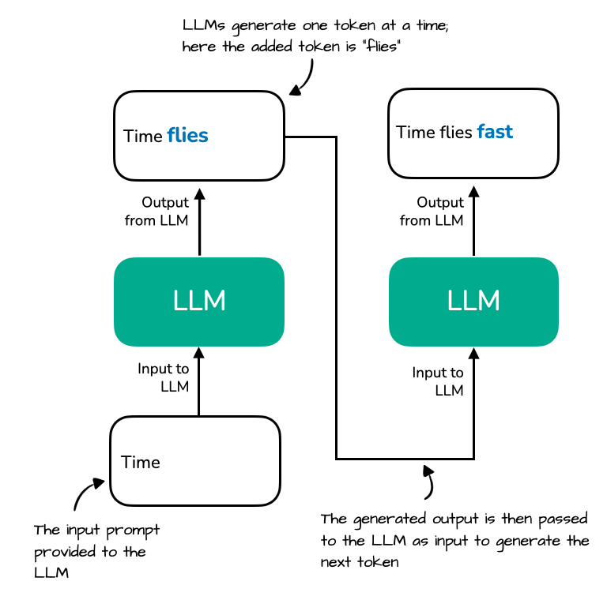
想象LLM生成文本：给定prompt「Time」，LLM一次生成一个token。下一步「Time flies」整序列被重处理、生成「fast」。LLM只用一个token生成，但它每步都重新编码整个前缀序列：key/value向量需要重算，造成冗余。
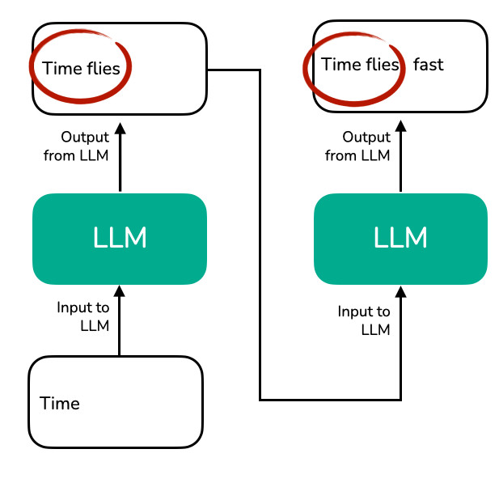
放大到注意力机制内部：输入token编码为向量，权重矩阵W把它们投影成key、query、value向量。对「Time」「flies」，LLM在第3步生成「fast」时，重算之前已见过的k(1)/v(1) 和k(2)/v(2)，而非复用。
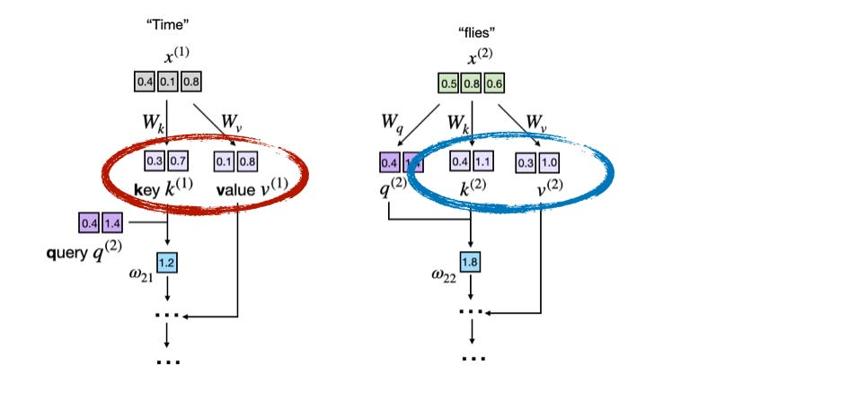
对比前两图，前两个token的key/value完全相同：自回归解码时每轮重算很浪费。KV cache就是想存已生成的key/value向量供复用，避免这些不必要重算。
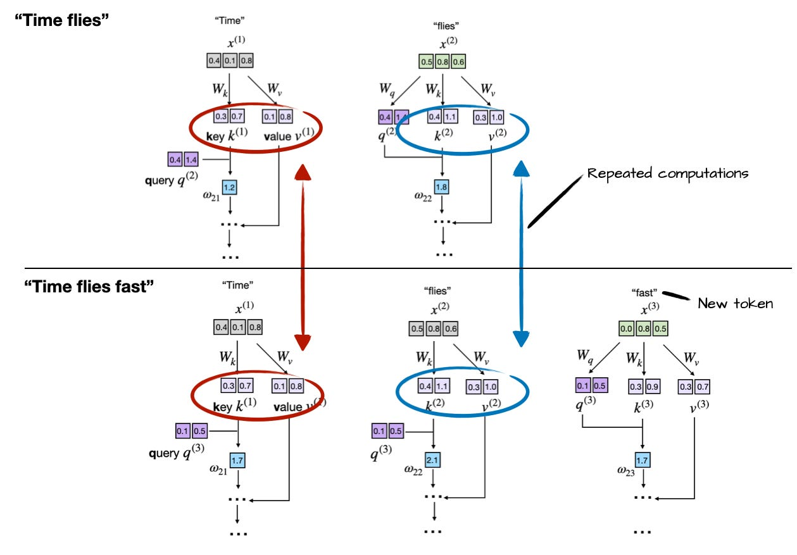
无cache时，「Time flies fast」每步都重算「Time」「flies」的K/V。KV cache把已算K/V存起来复用，彻底解决这冗余：① 初始算并缓存输入token的K/V；② 每生成新token只算该token的K/V；③ 从缓存取出先前已算向量避免重算。文本越长、复用得越多、生成越快。
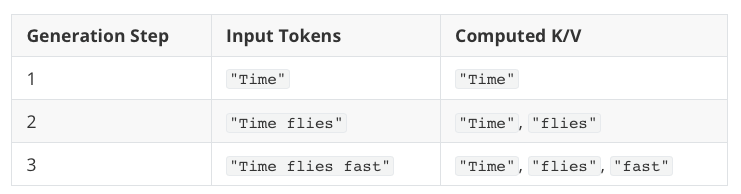
生成第3步的并排对比：上方无cache：每步重算K/V、冗余操作；下方有cache：从KV cache取先前算好的keys/values、生成更快。
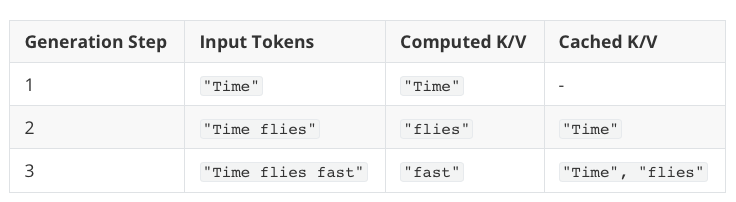
代码里实现KV cache很简单：正常算keys和values、但存起来供下一轮取用。
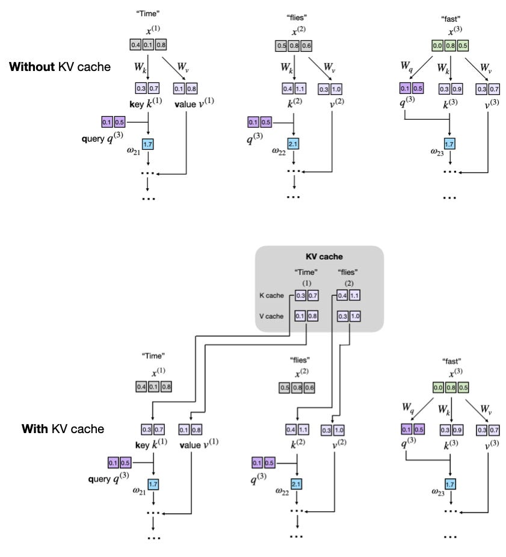
实现KV cache有多种方式，核心就是在每个生成步只算新token的key/value张量。作者选了强调可读性的简单版，两个自包含Python脚本（`gpt_ch04.py` 无cache、`gpt_with_kv_cache.py` 有cache），用diff看改动。
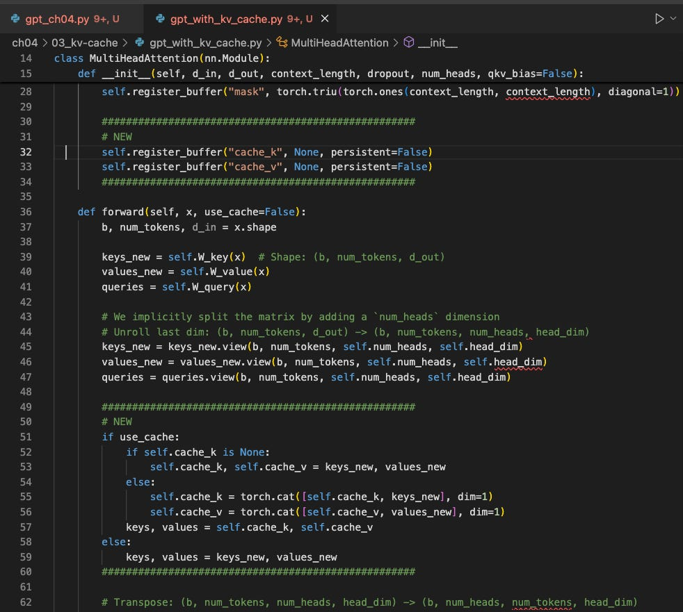
Step 1注册缓存buffer：在MultiHeadAttention构造器加两个buffer cache_k和cache_v，跨步存拼接keys/values。
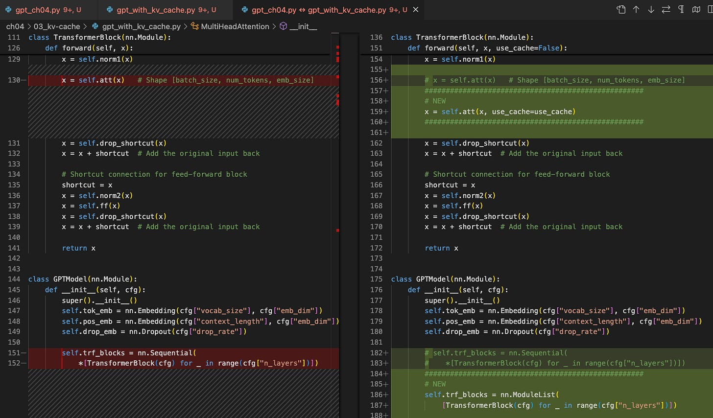
Step 2 forward加use_cache标志：扩展forward接受use_cache，计算新K/V后，若use_cache则初始化缓存或把新K/V cat进缓存，取cache的key/value用。存储和取回就实现了KV cache核心思想。
Step 3清缓存：生成文本时两个生成调用间必须重置keys/values buffer，否则新prompt的query会attend到上一序列残留的旧key：模型依赖无关上下文、输出不连贯。加reset_cache方法（cache_k/cache_v=None）。
Step 4全模型传播use_cache：改GPTModel，加current_pos位置计数器（记住已缓存多少token），把单行block调用换成显式循环传use_cache。use_cache=True时pos_ids从current_pos开始、走完seq_len后bump计数器：因为新query必须紧贴在已存key/value后面，否则每步回到0就好似新token覆盖旧位置。TransformerBlock也要接use_cache。
Step 5生成函数：`generate_text_simple_cached` 先reset + 用cache处理完整prompt，然后每步只把新token喂模型（use_cache=True）：无cache时得喂整个输入（无存K/V可复用）。
Step 1注册缓存buffer：
self.register_buffer("cache_k",None)
self.register_buffer("cache_v",None)Step 2前向传播中存储和取回key/value：
defforward(self,x,use_cache=False):
b,num_tokens,d_in=x.shape
keys_new=self.W_key(x)# Shape: (b, num_tokens, d_out)
values_new=self.W_value(x)
queries=self.W_query(x)
#...
ifuse_cache:
ifself.cache_kisNone:
self.cache_k,self.cache_v=keys_new,values_new
else:
self.cache_k=torch.cat([self.cache_k,keys_new],dim=1)
self.cache_v=torch.cat([self.cache_v,values_new],dim=1)
keys,values=self.cache_k,self.cache_v
else:
keys,values=keys_new,values_newStep 3清空缓存：
defreset_cache(self):
self.cache_k,self.cache_v=None,NoneStep 4 GPTModel前向传播（位置追踪 + 传use_cache）：
defforward(self,in_idx,use_cache=False):
# ...
ifuse_cache:
pos_ids=torch.arange(
self.current_pos,self.current_pos+seq_len,
device=in_idx.device,dtype=torch.long
)
self.current_pos+=seq_len
else:
pos_ids=torch.arange(
0,seq_len,device=in_idx.device,dtype=torch.long
)
pos_embeds=self.pos_emb(pos_ids).unsqueeze(0)
x=tok_embeds+pos_embeds
# ...
forblkinself.trf_blocks:
x=blk(x,use_cache=use_cache)TransformerBlock传use_cache：
defforward(self,x,use_cache=False):
# ...
self.att(x,use_cache=use_cache)Step 5带cache的生成函数（只喂新token）：
defgenerate_text_simple_cached(
model,idx,max_new_tokens,use_cache=True
):
model.eval()
ctx_len=model.pos_emb.num_embeddings# max sup. len., e.g. 1024
ifuse_cache:
# Init cache with full prompt
model.reset_kv_cache()
withtorch.no_grad():
logits=model(idx[:,-ctx_len:],use_cache=True)
for_inrange(max_new_tokens):
# a) pick the token with the highest log-probability
next_idx=logits[:,-1].argmax(dim=-1,keepdim=True)
# b) append it to the running sequence
idx=torch.cat([idx,next_idx],dim=1)
# c) feed model only the new token
withtorch.no_grad():
logits=model(next_idx,use_cache=True)
else:
for_inrange(max_new_tokens):
withtorch.no_grad():
logits=model(idx[:,-ctx_len:],use_cache=False)
next_idx=logits[:,-1].argmax(dim=-1,keepdim=True)
idx=torch.cat([idx,next_idx],dim=1)
returnidx跑两个脚本（124M参数模型、200新token、prompt「Hello, I am」）在Mac Mini M4（CPU）上：已拿到约5倍加速（小模型 + 短序列）。注意此实现为可读性优化、非CUDA/MPS最优（那需预分配张量而非反复拼接）。
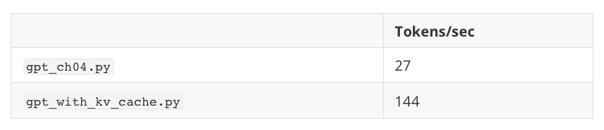
两种实现生成完全相同的文本：证明KV cache实现正确（容易出索引错误导致结果分歧）。模型未训练所以输出乱码，但cache正确性已被两脚本一致验证。
序列越长，KV cache的收益和代价越明显：
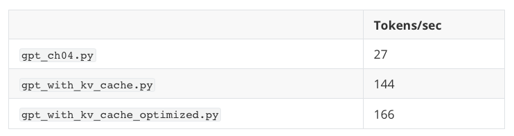
[Good] 计算效率上升：无cache时步t的注意力须把新query和t个旧key比，累积工作O(n²)；有cache每个key/value算一次复用，每步复杂度降到线性O(n)。
[Bad] 内存线性上升：每个新token追加进KV cache。长序列 + 大LLM时累积KV cache会吃掉显著甚至海量GPU内存。绕行=截断KV cache，但更复杂。
优化：真实部署（尤其大模型长序列）需更仔细优化。常见坑：① 内存碎片和重复分配：torch.cat连续拼接导致频繁内存分配/释放的瓶颈；② 内存线性增长：长序列不处理就不实用。
Tip 1预分配：按期望最大序列长预分配足够大的张量，写进切片而非反复cat，一致内存、降开销。Tip 2滑动窗口截断：维护最后window_size个token的缓存，防GPU内存爆炸。优化代码在gpt_with_kv_cache_optimized.py。
Mac Mini M4 CPU 200 token、窗口=上下文长时，优化版更快；但CUDA上小模型提速消失：设备传输和通信盖过KV cache的收益。
作者给从零实现的Qwen3(0.6B)、Llama3(1B) 加KV cache后跑额外实验。用torch.cat而非预分配（因Llama3/Qwen3上下文极大：131k/41k：预分配约多耗8GB内存很贵），为省内存把KV cache移到模型外、配torch.compile提效。
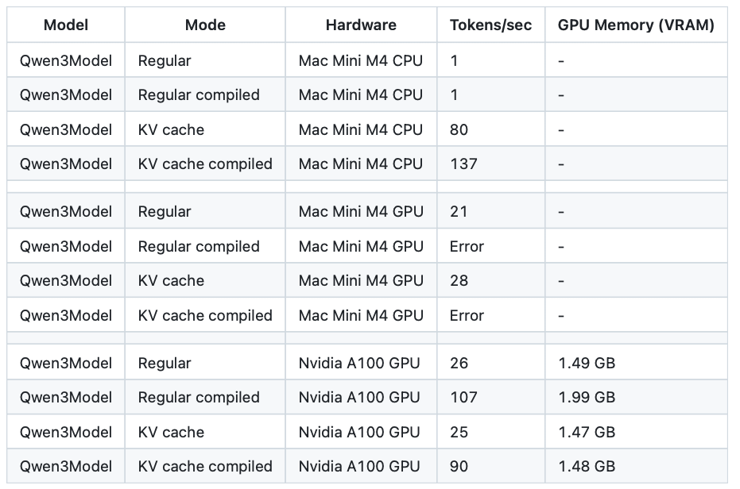
性能：CPU上KV cache提速最大、编译再增强；GPU上常规编译模型最佳：大概因为不预分配GPU张量、且模型相对小。
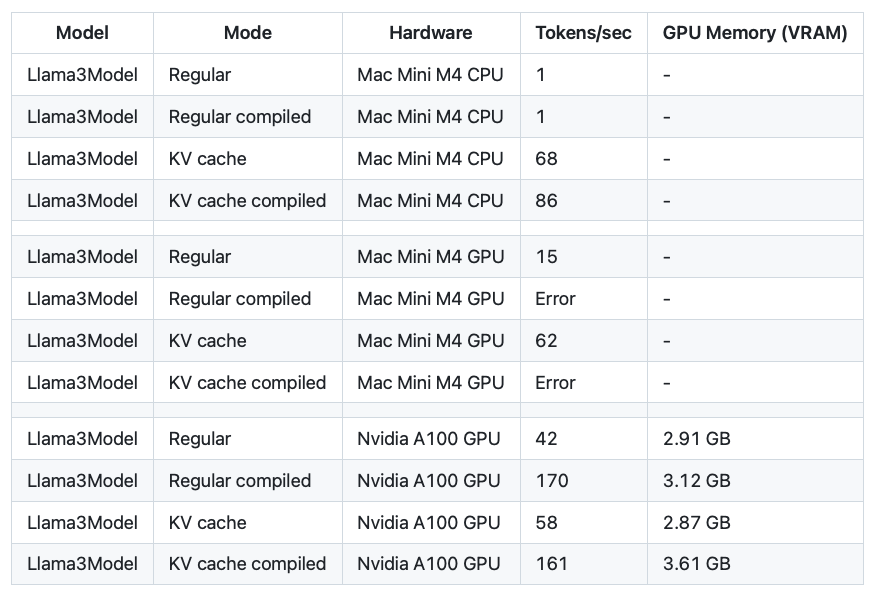
虽然缓存引入额外复杂度和内存考量，效率上显著的增益通常盖过这些权衡，尤其在生产环境。
作者优先代码清晰和可读性而非效率，但要点是：实践实现常需深思熟虑的优化：预分配内存或滑动窗口管理内存增长。轻松实验这些技巧，happy coding！
参考：https://magazine.sebastianraschka.com/p/coding-the-kv-cache-in-llms